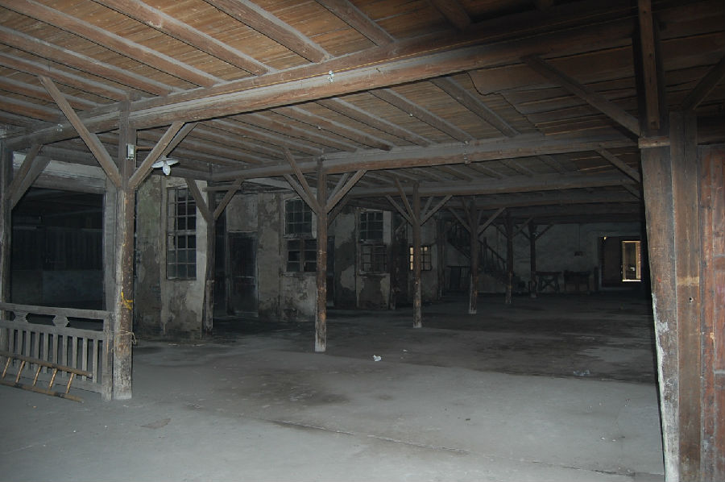

嘉兴市文物保护网 · 市级文物保护点 · 2020-11-06 · 原文

王店茧站位于嘉兴市秀洲区王店镇塘桥社区庆丰街1号（南塘），长水塘西岸。据徐锦华站长介绍，王店茧站原属供销社，建于1950年，1952年正式投入使用，建造在南塘一块荒废的坟地上。坐西朝东，当时有柴灶32付，串堂18间，楼房54间，平房三间，走廊32间， 1978年前曾号称世界最大的茧站，1997年改为股份制，现隶属于嘉欣丝绸集团。经过几十年的发展仍在使用，现存付款室3间，称场8间，串堂2个，堆场（底层是鲜茧堆场，二层是干茧堆场）50间，煤场1个，宿舍1幢，除串堂外其他都是二层建筑，建筑为人字形梁架。共占地9020.9平方米。王店茧站老建筑保存完好，规模较大，仍在发挥原有功能，反映了建国初期丝织业的面貌，是研究丝织工业发展的实物资料，具有较高的历史和科学价值。2009年公布为嘉兴市文物保护点。